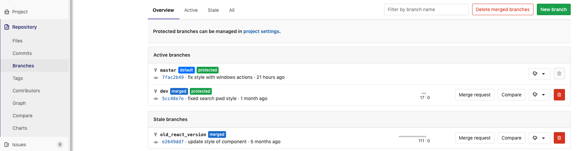
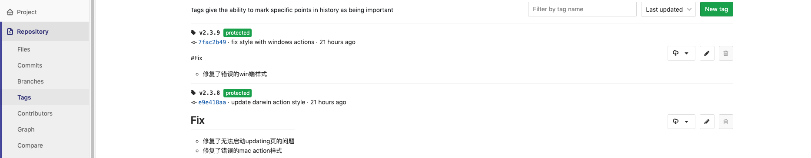
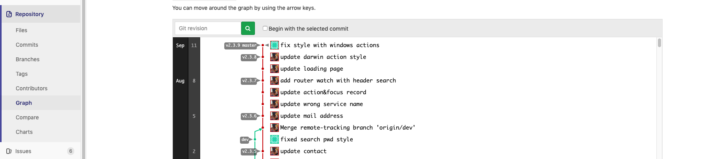

<!DOCTYPE html>
<html style="display: none;" lang="zh">
    <head><meta name="generator" content="Hexo 3.9.0">
    <meta charset="utf-8">
    <!--
        © Material Theme
        https://github.com/viosey/hexo-theme-material
        Version: 1.5.6 -->
    <script>
        window.materialVersion = "1.5.6"
        // Delete localstorage with these tags
        window.oldVersion = [
            'codestartv1',
            '1.3.4',
            '1.4.0',
            '1.4.0b1',
            '1.5.0',
            '1.5.2',
            '1.5.5'
        ]
    </script>

    <!-- dns prefetch -->
    <meta http-equiv="x-dns-prefetch-control" content="on">


    <link rel="dns-prefetch" href="https://fonts.googleapis.com">


    <!-- Meta & Info -->
    <meta http-equiv="X-UA-Compatible" content="IE=Edge,chrome=1">
    <meta name="renderer" content="webkit">
    <meta name="viewport" content="width=device-width, initial-scale=1, user-scalable=no">

    <!-- Title -->
    
    <title>
        
            从代码到线上,高度集成的gitlab工具链(二): gitflow | 
        
        Noir的博客
    </title>

    <!-- Favicons -->
    <link rel="icon shortcut" type="image/ico" href="/img/logo.png">
    <link rel="icon" href="/img/logo.png">

    <meta name="format-detection" content="telephone=no">
    <meta name="description" itemprop="description" content="从git到gitflow到gitlab的gitflow  git作为一个分布式的版本管理软件拥有优秀的分支模型支持，而基于模型与长期实践中获得的版本管理工作流程就叫gitflow，而gitlab则为日常开发工作提供了gitflow的系列可视化工具链。">
    <meta name="keywords" content=",gitlab,gitflow">
    <meta name="theme-color" content="#0097A7">

    <!-- Disable Fucking Bloody Baidu Tranformation -->
    <meta http-equiv="Cache-Control" content="no-transform">
    <meta http-equiv="Cache-Control" content="no-siteapp">

    <!--[if lte IE 9]>
        <link rel="stylesheet" href="/css/ie-blocker.css">

        
            <script src="/js/ie-blocker.zhCN.js"></script>
        
    <![endif]-->

    <!-- Import lsloader -->
    <script>(function(){window.lsloader={jsRunSequence:[],jsnamemap:{},cssnamemap:{}};lsloader.removeLS=function(a){try{localStorage.removeItem(a)}catch(b){}};lsloader.setLS=function(a,c){try{localStorage.setItem(a,c)}catch(b){}};lsloader.getLS=function(a){var c="";try{c=localStorage.getItem(a)}catch(b){c=""}return c};versionString="/*"+(window.materialVersion||"unknownVersion")+"*/";lsloader.clean=function(){try{var b=[];for(var a=0;a<localStorage.length;a++){b.push(localStorage.key(a))}b.forEach(function(e){var f=lsloader.getLS(e);if(window.oldVersion){var d=window.oldVersion.reduce(function(g,h){return g||f.indexOf("/*"+h+"*/")!==-1},false);if(d){lsloader.removeLS(e)}}})}catch(c){}};lsloader.clean();lsloader.load=function(f,a,b,d){if(typeof b==="boolean"){d=b;b=undefined}d=d||false;b=b||function(){};var e;e=this.getLS(f);if(e&&e.indexOf(versionString)===-1){this.removeLS(f);this.requestResource(f,a,b,d);return}if(e){var c=e.split(versionString)[0];if(c!=a){console.log("reload:"+a);this.removeLS(f);this.requestResource(f,a,b,d);return}e=e.split(versionString)[1];if(d){this.jsRunSequence.push({name:f,code:e});this.runjs(a,f,e)}else{document.getElementById(f).appendChild(document.createTextNode(e));b()}}else{this.requestResource(f,a,b,d)}};lsloader.requestResource=function(b,e,a,c){var d=this;if(c){this.iojs(e,b,function(h,f,g){d.setLS(f,h+versionString+g);d.runjs(h,f,g)})}else{this.iocss(e,b,function(f){document.getElementById(b).appendChild(document.createTextNode(f));d.setLS(b,e+versionString+f)},a)}};lsloader.iojs=function(d,b,g){var a=this;a.jsRunSequence.push({name:b,code:""});try{var f=new XMLHttpRequest();f.open("get",d,true);f.onreadystatechange=function(){if(f.readyState==4){if((f.status>=200&&f.status<300)||f.status==304){if(f.response!=""){g(d,b,f.response);return}}a.jsfallback(d,b)}};f.send(null)}catch(c){a.jsfallback(d,b)}};lsloader.iocss=function(f,c,h,a){var b=this;try{var g=new XMLHttpRequest();g.open("get",f,true);g.onreadystatechange=function(){if(g.readyState==4){if((g.status>=200&&g.status<300)||g.status==304){if(g.response!=""){h(g.response);a();return}}b.cssfallback(f,c,a)}};g.send(null)}catch(d){b.cssfallback(f,c,a)}};lsloader.iofonts=function(f,c,h,a){var b=this;try{var g=new XMLHttpRequest();g.open("get",f,true);g.onreadystatechange=function(){if(g.readyState==4){if((g.status>=200&&g.status<300)||g.status==304){if(g.response!=""){h(g.response);a();return}}b.cssfallback(f,c,a)}};g.send(null)}catch(d){b.cssfallback(f,c,a)}};lsloader.runjs=function(f,c,e){if(!!c&&!!e){for(var b in this.jsRunSequence){if(this.jsRunSequence[b].name==c){this.jsRunSequence[b].code=e}}}if(!!this.jsRunSequence[0]&&!!this.jsRunSequence[0].code&&this.jsRunSequence[0].status!="failed"){var a=document.createElement("script");a.appendChild(document.createTextNode(this.jsRunSequence[0].code));a.type="text/javascript";document.getElementsByTagName("head")[0].appendChild(a);this.jsRunSequence.shift();if(this.jsRunSequence.length>0){this.runjs()}}else{if(!!this.jsRunSequence[0]&&this.jsRunSequence[0].status=="failed"){var d=this;var a=document.createElement("script");a.src=this.jsRunSequence[0].path;a.type="text/javascript";this.jsRunSequence[0].status="loading";a.onload=function(){d.jsRunSequence.shift();if(d.jsRunSequence.length>0){d.runjs()}};document.body.appendChild(a)}}};lsloader.tagLoad=function(b,a){this.jsRunSequence.push({name:a,code:"",path:b,status:"failed"});this.runjs()};lsloader.jsfallback=function(c,b){if(!!this.jsnamemap[b]){return}else{this.jsnamemap[b]=b}for(var a in this.jsRunSequence){if(this.jsRunSequence[a].name==b){this.jsRunSequence[a].code="";this.jsRunSequence[a].status="failed";this.jsRunSequence[a].path=c}}this.runjs()};lsloader.cssfallback=function(e,c,b){if(!!this.cssnamemap[c]){return}else{this.cssnamemap[c]=1}var d=document.createElement("link");d.type="text/css";d.href=e;d.rel="stylesheet";d.onload=d.onerror=b;var a=document.getElementsByTagName("script")[0];a.parentNode.insertBefore(d,a)};lsloader.runInlineScript=function(c,b){var a=document.getElementById(b).innerText;this.jsRunSequence.push({name:c,code:a});this.runjs()}})();</script>

    <!-- Import queue -->
    <script>function Queue(){this.dataStore=[];this.offer=b;this.poll=d;this.execNext=a;this.debug=false;this.startDebug=c;function b(e){if(this.debug){console.log("Offered a Queued Function.")}if(typeof e==="function"){this.dataStore.push(e)}else{console.log("You must offer a function.")}}function d(){if(this.debug){console.log("Polled a Queued Function.")}return this.dataStore.shift()}function a(){var e=this.poll();if(e!==undefined){if(this.debug){console.log("Run a Queued Function.")}e()}}function c(){this.debug=true}}var queue=new Queue();</script>

    <!-- Import CSS -->
    
        <style id="material_css"></style><script>if(typeof window.lsLoadCSSMaxNums === "undefined")window.lsLoadCSSMaxNums = 0;window.lsLoadCSSMaxNums++;lsloader.load("material_css","/css/material.min.css?Z7a72R1E4SxzBKR/WGctOA==",function(){if(typeof window.lsLoadCSSNums === "undefined")window.lsLoadCSSNums = 0;window.lsLoadCSSNums++;if(window.lsLoadCSSNums == window.lsLoadCSSMaxNums)document.documentElement.style.display="";}, false)</script>
        <style id="style_css"></style><script>if(typeof window.lsLoadCSSMaxNums === "undefined")window.lsLoadCSSMaxNums = 0;window.lsLoadCSSMaxNums++;lsloader.load("style_css","/css/style.min.css?7yUD/wxgDe3Kqz0nM7DMfQ==",function(){if(typeof window.lsLoadCSSNums === "undefined")window.lsLoadCSSNums = 0;window.lsLoadCSSNums++;if(window.lsLoadCSSNums == window.lsLoadCSSMaxNums)document.documentElement.style.display="";}, false)</script>

        

    

    

    <!-- Config CSS -->

<!-- Other Styles -->
<style>
  body, html {
    font-family: Roboto, "Helvetica Neue", Helvetica, "PingFang SC", "Hiragino Sans GB", "Microsoft YaHei", "微软雅黑", Arial, sans-serif;
    overflow-x: hidden !important;
  }
  
  code {
    font-family: Consolas, Monaco, 'Andale Mono', 'Ubuntu Mono', monospace;
  }

  a {
    color: #00838F;
  }

  .mdl-card__media,
  #search-label,
  #search-form-label:after,
  #scheme-Paradox .hot_tags-count,
  #scheme-Paradox .sidebar_archives-count,
  #scheme-Paradox .sidebar-colored .sidebar-header,
  #scheme-Paradox .sidebar-colored .sidebar-badge{
    background-color: #0097A7 !important;
  }

  /* Sidebar User Drop Down Menu Text Color */
  #scheme-Paradox .sidebar-colored .sidebar-nav>.dropdown>.dropdown-menu>li>a:hover,
  #scheme-Paradox .sidebar-colored .sidebar-nav>.dropdown>.dropdown-menu>li>a:focus {
    color: #0097A7 !important;
  }

  #post_entry-right-info,
  .sidebar-colored .sidebar-nav li:hover > a,
  .sidebar-colored .sidebar-nav li:hover > a i,
  .sidebar-colored .sidebar-nav li > a:hover,
  .sidebar-colored .sidebar-nav li > a:hover i,
  .sidebar-colored .sidebar-nav li > a:focus i,
  .sidebar-colored .sidebar-nav > .open > a,
  .sidebar-colored .sidebar-nav > .open > a:hover,
  .sidebar-colored .sidebar-nav > .open > a:focus,
  #ds-reset #ds-ctx .ds-ctx-entry .ds-ctx-head a {
    color: #0097A7 !important;
  }

  .toTop {
    background: #757575 !important;
  }

  .material-layout .material-post>.material-nav,
  .material-layout .material-index>.material-nav,
  .material-nav a {
    color: #757575;
  }

  #scheme-Paradox .MD-burger-layer {
    background-color: #757575;
  }

  #scheme-Paradox #post-toc-trigger-btn {
    color: #757575;
  }

  .post-toc a:hover {
    color: #00838F;
    text-decoration: underline;
  }

</style>


<!-- Theme Background Related-->

    <style>
      body{
        background-color: #F5F5F5;
      }

      /* blog_info bottom background */
      #scheme-Paradox .material-layout .something-else .mdl-card__supporting-text{
        background-color: #fff;
      }
    </style>


<!-- Fade Effect -->

    <style>
      .fade {
        transition: all 800ms linear;
        -webkit-transform: translate3d(0,0,0);
        -moz-transform: translate3d(0,0,0);
        -ms-transform: translate3d(0,0,0);
        -o-transform: translate3d(0,0,0);
        transform: translate3d(0,0,0);
        opacity: 1;
      }

      .fade.out{
        opacity: 0;
      }
    </style>


<!-- Import Font -->
<!-- Import Roboto -->

    <link href="https://fonts.googleapis.com/css?family=Roboto:300,400,500" rel="stylesheet">


<!-- Import Material Icons -->


    <style id="material_icons"></style><script>if(typeof window.lsLoadCSSMaxNums === "undefined")window.lsLoadCSSMaxNums = 0;window.lsLoadCSSMaxNums++;lsloader.load("material_icons","/css/material-icons.css?pqhB/Rd/ab0H2+kZp0RDmw==",function(){if(typeof window.lsLoadCSSNums === "undefined")window.lsLoadCSSNums = 0;window.lsLoadCSSNums++;if(window.lsLoadCSSNums == window.lsLoadCSSMaxNums)document.documentElement.style.display="";}, false)</script>


    <!-- Import jQuery -->
    
        <script>lsloader.load("jq_js","/js/jquery.min.js?qcusAULNeBksqffqUM2+Ig==", true)</script>
    

    <!-- WebAPP Icons -->
    <meta name="mobile-web-app-capable" content="yes">
    <meta name="application-name" content="Noir的博客">
    <meta name="msapplication-starturl" content="https://noir-lattice.github.io/2019/09/12/从代码到线上-高度集成的gitlab工具链-二-gitflow/">
    <meta name="msapplication-navbutton-color" content="#0097A7">
    <meta name="apple-mobile-web-app-capable" content="yes">
    <meta name="apple-mobile-web-app-title" content="Noir的博客">
    <meta name="apple-mobile-web-app-status-bar-style" content="black">
    <link rel="apple-touch-icon" href="/img/logo.png">

    <!-- Site Verification -->
    
    

    <!-- RSS -->
    

    <!-- The Open Graph protocol -->
    <meta property="og:url" content="https://noir-lattice.github.io/2019/09/12/从代码到线上-高度集成的gitlab工具链-二-gitflow/">
    <meta property="og:type" content="blog">
    <meta property="og:title" content="从代码到线上,高度集成的gitlab工具链(二): gitflow | Noir的博客">
    <meta property="og:image" content="/img/logo.png">
    <meta property="og:description" content="从git到gitflow到gitlab的gitflow  git作为一个分布式的版本管理软件拥有优秀的分支模型支持，而基于模型与长期实践中获得的版本管理工作流程就叫gitflow，而gitlab则为日常开发工作提供了gitflow的系列可视化工具链。">
    <meta property="og:article:tag" content="gitlab"> <meta property="og:article:tag" content="gitflow"> 

    
        <meta property="article:published_time" content="Thu Sep 12 2019 10:46:27 GMT+0800">
        <meta property="article:modified_time" content="Sun Dec 06 2020 14:15:13 GMT+0800">
    

    <!-- The Twitter Card protocol -->
    <meta name="twitter:card" content="summary_large_image">

    <!-- Add canonical link for SEO -->
    
        <link rel="canonical" href="https://noir-lattice.github.io/2019/09/12/从代码到线上-高度集成的gitlab工具链-二-gitflow/index.html">
    

    <!-- Structured-data for SEO -->
    
        


<script type="application/ld+json">
{
    "@context": "https://schema.org",
    "@type": "BlogPosting",
    "mainEntityOfPage": "https://noir-lattice.github.io/2019/09/12/从代码到线上-高度集成的gitlab工具链-二-gitflow/index.html",
    "headline": "从代码到线上,高度集成的gitlab工具链(二): gitflow",
    "datePublished": "Thu Sep 12 2019 10:46:27 GMT+0800",
    "dateModified": "Sun Dec 06 2020 14:15:13 GMT+0800",
    "author": {
        "@type": "Person",
        "name": "noir",
        "image": {
            "@type": "ImageObject",
            "url": "/img/avatar.jpg"
        },
        "description": "Freiheit als Autonomie"
    },
    "publisher": {
        "@type": "Organization",
        "name": "Noir的博客",
        "logo": {
            "@type":"ImageObject",
            "url": "/img/logo.png"
        }
    },
    "keywords": ",gitlab,gitflow",
    "description": "从git到gitflow到gitlab的gitflow  git作为一个分布式的版本管理软件拥有优秀的分支模型支持，而基于模型与长期实践中获得的版本管理工作流程就叫gitflow，而gitlab则为日常开发工作提供了gitflow的系列可视化工具链。",
}
</script>


    

    <!-- Analytics -->
    
    
    

    <!-- Custom Head -->
    

</head>


    
        <body id="scheme-Paradox" class="lazy">
            <div class="material-layout  mdl-js-layout has-drawer is-upgraded">
                

                <!-- Main Container -->
                <main class="material-layout__content" id="main">

                    <!-- Top Anchor -->
                    <div id="top"></div>

                    
                        <!-- Hamburger Button -->
                        <button class="MD-burger-icon sidebar-toggle">
                            <span id="MD-burger-id" class="MD-burger-layer"></span>
                        </button>
                    

                    <!-- Post TOC -->

    
    <!-- Back Button -->
    <!--
    <div class="material-back" id="backhome-div" tabindex="0">
        <a class="mdl-button mdl-js-button mdl-js-ripple-effect mdl-button--icon"
           href="#" onclick="window.history.back();return false;"
           target="_self"
           role="button"
           data-upgraded=",MaterialButton,MaterialRipple">
            <i class="material-icons" role="presentation">arrow_back</i>
            <span class="mdl-button__ripple-container">
                <span class="mdl-ripple"></span>
            </span>
        </a>
    </div>
    -->


    <!-- Left aligned menu below button -->
    
    
    <button id="post-toc-trigger-btn"
        class="mdl-button mdl-js-button mdl-button--icon">
        <i class="material-icons">format_list_numbered</i>
    </button>

    <ul class="post-toc-wrap mdl-menu mdl-menu--bottom-left mdl-js-menu mdl-js-ripple-effect" for="post-toc-trigger-btn" style="max-height:80vh; overflow-y:scroll;">
        <ol class="post-toc"><li class="post-toc-item post-toc-level-2"><a class="post-toc-link" href="#从git到gitflow到gitlab的gitflow"><span class="post-toc-number">1.</span> <span class="post-toc-text">从git到gitflow到gitlab的gitflow</span></a></li><li class="post-toc-item post-toc-level-2"><a class="post-toc-link" href="#总结和实践一个分支模型"><span class="post-toc-number">2.</span> <span class="post-toc-text">总结和实践一个分支模型</span></a><ol class="post-toc-child"><li class="post-toc-item post-toc-level-3"><a class="post-toc-link" href="#Commit-graph"><span class="post-toc-number">2.1.</span> <span class="post-toc-text">Commit graph</span></a></li></ol></li><li class="post-toc-item post-toc-level-2"><a class="post-toc-link" href="#gitlab提供的工具"><span class="post-toc-number">3.</span> <span class="post-toc-text">gitlab提供的工具</span></a></li><li class="post-toc-item post-toc-level-2"><a class="post-toc-link" href="#值得推荐的工具与参考"><span class="post-toc-number">4.</span> <span class="post-toc-text">值得推荐的工具与参考</span></a></li></ol>
    </ul>
    


<!-- Layouts -->

    <!-- Post Module -->
    <div class="material-post_container">

        <div class="material-post mdl-grid">
            <div class="mdl-card mdl-shadow--4dp mdl-cell mdl-cell--12-col">

                <!-- Post Header(Thumbnail & Title) -->
                
    <!-- Paradox Post Header -->
    
        
            <!-- Random Thumbnail -->
            <div class="post_thumbnail-random mdl-card__media mdl-color-text--grey-50">
            <script type="text/ls-javascript" id="post-thumbnail-script">
    var randomNum = Math.floor(Math.random() * 19 + 1);

    $('.post_thumbnail-random').attr('data-original', '/img/random/material-' + randomNum + '.png');
    $('.post_thumbnail-random').addClass('lazy');
</script>

        
    
            <p class="article-headline-p">
                从代码到线上,高度集成的gitlab工具链(二): gitflow
            </p>
        </div>


                
                    <!-- Paradox Post Info -->
                    <div class="mdl-color-text--grey-700 mdl-card__supporting-text meta">

    <!-- Author Avatar -->
    <div id="author-avatar">
        
    </div>
    <!-- Author Name & Date -->
    <div>
        <strong>noir</strong>
        <span>9月 12, 2019</span>
    </div>

    <div class="section-spacer"></div>

    <!-- Favorite -->
    <!--
        <button id="article-functions-like-button" class="mdl-button mdl-js-button mdl-js-ripple-effect mdl-button--icon btn-like">
            <i class="material-icons" role="presentation">favorite</i>
            <span class="visuallyhidden">favorites</span>
        </button>
    -->

    <!-- Qrcode -->
    

    <!-- Tags (bookmark) -->
    
    <button id="article-functions-viewtags-button" class="mdl-button mdl-js-button mdl-js-ripple-effect mdl-button--icon">
        <i class="material-icons" role="presentation">bookmark</i>
        <span class="visuallyhidden">bookmark</span>
    </button>
    <ul class="mdl-menu mdl-menu--bottom-right mdl-js-menu mdl-js-ripple-effect" for="article-functions-viewtags-button">
        <li class="mdl-menu__item">
        <a class="post_tag-link" href="/tags/gitflow/">gitflow</a></li><li class="mdl-menu__item"><a class="post_tag-link" href="/tags/gitlab/">gitlab</a>
    </ul>
    

    <!-- Share -->
    
        <button id="article-fuctions-share-button" class="mdl-button mdl-js-button mdl-js-ripple-effect mdl-button--icon">
    <i class="material-icons" role="presentation">share</i>
    <span class="visuallyhidden">share</span>
</button>
<ul class="mdl-menu mdl-menu--bottom-right mdl-js-menu mdl-js-ripple-effect" for="article-fuctions-share-button">
    

    

    <!-- Share Weibo -->
    
        <a class="post_share-link" href="http://service.weibo.com/share/share.php?appkey=&title=从代码到线上,高度集成的gitlab工具链(二): gitflow&url=https://noir-lattice.github.io/2019/09/12/从代码到线上-高度集成的gitlab工具链-二-gitflow/index.html&pic=https://noir-lattice.github.io/img/logo.png&searchPic=false&style=simple" target="_blank">
            <li class="mdl-menu__item">
                分享到微博
            </li>
        </a>
    

    <!-- Share Twitter -->
    
        <a class="post_share-link" href="https://twitter.com/intent/tweet?text=从代码到线上,高度集成的gitlab工具链(二): gitflow&url=https://noir-lattice.github.io/2019/09/12/从代码到线上-高度集成的gitlab工具链-二-gitflow/index.html&via=noir" target="_blank">
            <li class="mdl-menu__item">
                分享到 Twitter
            </li>
        </a>
    

    <!-- Share Facebook -->
    
        <a class="post_share-link" href="https://www.facebook.com/sharer/sharer.php?u=https://noir-lattice.github.io/2019/09/12/从代码到线上-高度集成的gitlab工具链-二-gitflow/index.html" target="_blank">
            <li class="mdl-menu__item">
                分享到 Facebook
            </li>
        </a>
    

    <!-- Share Google+ -->
    
        <a class="post_share-link" href="https://plus.google.com/share?url=https://noir-lattice.github.io/2019/09/12/从代码到线上-高度集成的gitlab工具链-二-gitflow/index.html" target="_blank">
            <li class="mdl-menu__item">
                分享到 Google+
            </li>
        </a>
    

    <!-- Share LinkedIn -->
    

    <!-- Share QQ -->
    

    <!-- Share Telegram -->
    
</ul>

    
</div>

                

                <!-- Post Content -->
                <div id="post-content" class="mdl-color-text--grey-700 mdl-card__supporting-text fade out">
    
        <h2 id="从git到gitflow到gitlab的gitflow"><a href="#从git到gitflow到gitlab的gitflow" class="headerlink" title="从git到gitflow到gitlab的gitflow"></a>从git到gitflow到gitlab的gitflow</h2><p>  git作为一个分布式的版本管理软件拥有优秀的分支模型支持，而基于模型与长期实践中获得的版本管理工作流程就叫gitflow，而gitlab则为日常开发工作提供了gitflow的系列可视化工具链。</p>
  <a id="more"></a>

<h2 id="总结和实践一个分支模型"><a href="#总结和实践一个分支模型" class="headerlink" title="总结和实践一个分支模型"></a>总结和实践一个分支模型</h2><p>  对于不同大小的公司有不同的管理办法，形而上学的完美解决方案是不存在的，公司人员协调与事物规章甚至问题追责办法对于不同规模不同性质的机构实体都有不同的处理办法，对于软件项目的分支模型设计同样是这个道理。  </p>
<p>  一个简单的道理，如果是个人项目，不需要协调与管理、需求明确、任务时间自由且设计思路清晰，那么我肯定不会建出五花八门的分支用于消磨自己的时间；而对于项目与人员都很复杂，模块需要负责人员并提供好过程与质量管理，那么我们肯定需要根据实际情况创建不同的分支来进行管理来维护开发进程的稳定。 </p>
<p>  常见的，我们可能会创建的分支有：</p>
<ul>
<li>master: 主分支，仅做对外发布作用，只读（仅可通过release/hotfix合并）</li>
<li>develop: 开发分支，从develop签出，只读（仅可通过feature/release合并）</li>
<li>feature: 特性分支，临时分支，可以有多个，从develop签出，在release提测后可删除</li>
<li>release: 测试分支，临时分支，从某个feature分支中签出，提交测试功能完成后合并至develop/master完成发布后可删除</li>
<li>hotfix: 紧急修复分支，临时分支，从master签出，修复bug后合并至develop/master完成发布</li>
</ul>
<h3 id="Commit-graph"><a href="#Commit-graph" class="headerlink" title="Commit graph"></a>Commit graph</h3><p>  <br>  在该模型中，值得注意的是：</p>
<ul>
<li>master的每次merge都是合并的一次提交并打标（做发布的版本控制）</li>
<li>严格的只读保护master和develop（代码保护）</li>
<li>feature需要在release中提测过才可以合并发布（ci/cd及管理友好）</li>
</ul>
<p>以上我们举了较为通用的gitflow分支模型，在配合相应的人员管理与需求工具集成便可以方便而有序的维持项目开发过程。</p>
<h2 id="gitlab提供的工具"><a href="#gitlab提供的工具" class="headerlink" title="gitlab提供的工具"></a>gitlab提供的工具</h2><ul>
<li>提交视图<br></li>
<li>分支管理<br></li>
<li>标记管理<br></li>
<li>分支视图<br></li>
</ul>
<h2 id="值得推荐的工具与参考"><a href="#值得推荐的工具与参考" class="headerlink" title="值得推荐的工具与参考"></a>值得推荐的工具与参考</h2><ul>
<li><a href="http://danielkummer.github.io/git-flow-cheatsheet/" target="_blank" rel="noopener">gitflow extensions</a></li>
<li><a href="https://nvie.com/posts/a-successful-git-branching-model/" target="_blank" rel="noopener">A successful Git branching model</a></li>
</ul>

        
    

    
</div>


                

                <!-- Post Comments -->
                
                    
                
            </div>

            <!-- Post Prev & Next Nav -->
            <nav class="material-nav mdl-color-text--grey-50 mdl-cell mdl-cell--12-col">
    <!-- Prev Nav -->
    
        <a href="/2019/09/12/从代码到线上-高度集成的gitlab工具链-一-工具链介绍及环境搭建/" id="post_nav-newer" class="prev-content">
            <button class="mdl-button mdl-js-button mdl-js-ripple-effect mdl-button--icon mdl-color--white mdl-color-text--grey-900" role="presentation">
                <i class="material-icons">arrow_back</i>
            </button>
            &nbsp;&nbsp;&nbsp;&nbsp;&nbsp;&nbsp;
            新篇
        </a>
    

    <!-- Section Spacer -->
    <div class="section-spacer"></div>

    <!-- Next Nav -->
    
        <a href="/2019/08/22/kubernetes环境搭建-三-PV-PVC和StorageClass/" id="post_nav-older" class="next-content">
            旧篇
            &nbsp;&nbsp;&nbsp;&nbsp;&nbsp;&nbsp;
            <button class="mdl-button mdl-js-button mdl-js-ripple-effect mdl-button--icon mdl-color--white mdl-color-text--grey-900" role="presentation">
                <i class="material-icons">arrow_forward</i>
            </button>
        </a>
    
</nav>

        </div>
    </div>


                    
                        <!-- Overlay For Active Sidebar -->
<div class="sidebar-overlay"></div>

<!-- Material sidebar -->
<aside id="sidebar" class="sidebar sidebar-colored sidebar-fixed-left" role="navigation">
    <div id="sidebar-main">
        <!-- Sidebar Header -->
        <div class="sidebar-header header-cover" style="background-image: url(/img/sidebar_header.png);">
    <!-- Top bar -->
    <div class="top-bar"></div>

    <!-- Sidebar toggle button -->
    <button type="button" class="sidebar-toggle mdl-button mdl-js-button mdl-js-ripple-effect mdl-button--icon" style="display: initial;" data-upgraded=",MaterialButton,MaterialRipple">
        <i class="material-icons">clear_all</i>
        <span class="mdl-button__ripple-container">
            <span class="mdl-ripple">
            </span>
        </span>
    </button>

    <!-- Sidebar Avatar -->
    <div class="sidebar-image">
        
    </div>

    <!-- Sidebar Email -->
    <a data-toggle="dropdown" class="sidebar-brand" href="#settings-dropdown">
        noir-lattice@outlook.com
        <b class="caret"></b>
    </a>
</div>


        <!-- Sidebar Navigation  -->
        <ul class="nav sidebar-nav">
    <!-- User dropdown  -->
    <li class="dropdown">
        <ul id="settings-dropdown" class="dropdown-menu">
            
                <li>
                    <a href="#" target="_blank" title="Email Me">
                        
                            <i class="material-icons sidebar-material-icons sidebar-indent-left1pc-element">email</i>
                        
                        Email Me
                    </a>
                </li>
            
        </ul>
    </li>

    <!-- Homepage -->
    
        <li id="sidebar-first-li">
            <a href="/">
                
                    <i class="material-icons sidebar-material-icons">home</i>
                
                主页
            </a>
        </li>
        
    

    <!-- Archives  -->
    
        <li class="dropdown">
            <a href="#" class="ripple-effect dropdown-toggle" data-toggle="dropdown">
                
                    <i class="material-icons sidebar-material-icons">inbox</i>
                
                    归档
                <b class="caret"></b>
            </a>
            <ul class="dropdown-menu">
            <li>
                <a class="sidebar_archives-link" href="/archives/2020/12/">十二月 2020<span class="sidebar_archives-count">3</span></a></li><li><a class="sidebar_archives-link" href="/archives/2020/10/">十月 2020<span class="sidebar_archives-count">6</span></a></li><li><a class="sidebar_archives-link" href="/archives/2020/08/">八月 2020<span class="sidebar_archives-count">1</span></a></li><li><a class="sidebar_archives-link" href="/archives/2020/07/">七月 2020<span class="sidebar_archives-count">1</span></a></li><li><a class="sidebar_archives-link" href="/archives/2020/06/">六月 2020<span class="sidebar_archives-count">1</span></a></li><li><a class="sidebar_archives-link" href="/archives/2020/05/">五月 2020<span class="sidebar_archives-count">5</span></a></li><li><a class="sidebar_archives-link" href="/archives/2019/11/">十一月 2019<span class="sidebar_archives-count">3</span></a></li><li><a class="sidebar_archives-link" href="/archives/2019/10/">十月 2019<span class="sidebar_archives-count">2</span></a></li><li><a class="sidebar_archives-link" href="/archives/2019/09/">九月 2019<span class="sidebar_archives-count">2</span></a></li><li><a class="sidebar_archives-link" href="/archives/2019/08/">八月 2019<span class="sidebar_archives-count">5</span></a>
            </ul>
        </li>
        
    

    <!-- Categories  -->
    
        <li class="dropdown">
            <a href="#" class="ripple-effect dropdown-toggle" data-toggle="dropdown">
                
                    <i class="material-icons sidebar-material-icons">chrome_reader_mode</i>
                
                分类
                <b class="caret"></b>
            </a>
            <ul class="dropdown-menu">
                <li>
                <a class="sidebar_archives-link" href="/categories/devops/">devops<span class="sidebar_archives-count">4</span></a></li><li><a class="sidebar_archives-link" href="/categories/java/">java<span class="sidebar_archives-count">5</span></a></li><li><a class="sidebar_archives-link" href="/categories/kubernetes/">kubernetes<span class="sidebar_archives-count">3</span></a></li><li><a class="sidebar_archives-link" href="/categories/中间件/">中间件<span class="sidebar_archives-count">2</span></a></li><li><a class="sidebar_archives-link" href="/categories/杂谈/">杂谈<span class="sidebar_archives-count">1</span></a></li><li><a class="sidebar_archives-link" href="/categories/架构/">架构<span class="sidebar_archives-count">4</span></a></li><li><a class="sidebar_archives-link" href="/categories/算法与数据结构/">算法与数据结构<span class="sidebar_archives-count">5</span></a></li><li><a class="sidebar_archives-link" href="/categories/缓存中间件/">缓存中间件<span class="sidebar_archives-count">1</span></a></li><li><a class="sidebar_archives-link" href="/categories/网络/">网络<span class="sidebar_archives-count">2</span></a></li><li><a class="sidebar_archives-link" href="/categories/踩坑记录/">踩坑记录<span class="sidebar_archives-count">1</span></a></li><li><a class="sidebar_archives-link" href="/categories/面试/">面试<span class="sidebar_archives-count">1</span></a>
            </ul>
        </li>
        
    

    <!-- Pages  -->
    

    <!-- Article Number  -->
    
        <li>
            <a href="/archives">
                文章总数
                <span class="sidebar-badge">29</span>
            </a>
        </li>
        
    
</ul>


        <!-- Sidebar Footer -->
        <!--
I'm glad you use this theme, the development is no so easy, I hope you can keep the copyright, I will thank you so much.
If you still want to delete the copyrights, could you still retain the first one? Which namely "Theme Material"
It will not impact the appearance and can give developers a lot of support :)

很高兴您使用并喜欢该主题，开发不易 十分谢谢与希望您可以保留一下版权声明。
如果您仍然想删除的话 能否只保留第一项呢？即 "Theme Material"
它不会影响美观并可以给开发者很大的支持和动力。 :)
-->

<!-- Sidebar Divider -->

    <div class="sidebar-divider"></div>


<!-- Theme Material -->
<!-- 
    <a href="https://github.com/viosey/hexo-theme-material"  class="sidebar-footer-text-a" target="_blank">
        <div class="sidebar-text mdl-button mdl-js-button mdl-js-ripple-effect sidebar-footer-text-div" data-upgraded=",MaterialButton,MaterialRipple">
            主题 - Material
            <span class="sidebar-badge badge-circle">i</span>
        </div>
    </a>
 -->

<!-- Help & Support -->
<!--

-->

<!-- Feedback -->
<!--

-->

<!-- About Theme -->
<!--

-->

    </div>

    <!-- Sidebar Image -->
    

</aside>

                    

                    
                        <!-- Footer Top Button -->
                        <div id="back-to-top" class="toTop-wrap">
    <a href="#top" class="toTop">
        <i class="material-icons footer_top-i">expand_less</i>
    </a>
</div>

                    

                    <!--Footer-->
<footer class="mdl-mini-footer" id="bottom">
    
        <!-- Paradox Footer Left Section -->
        <div class="mdl-mini-footer--left-section sns-list">
    <!-- Twitter -->
    

    <!-- Facebook -->
    

    <!-- Google + -->
    

    <!-- Weibo -->
    

    <!-- Instagram -->
    

    <!-- Tumblr -->
    

    <!-- Github -->
    
        <a href="https://github.com/noir-lattice" target="_blank">
            <button class="mdl-mini-footer--social-btn social-btn footer-sns-github">
                <span class="visuallyhidden">Github</span>
            </button><!--
     --></a>
    

    <!-- LinkedIn -->
    

    <!-- Zhihu -->
    

    <!-- Bilibili -->
    
        <a href="https://space.bilibili.com/2006225" target="_blank">
            <button class="mdl-mini-footer--social-btn social-btn footer-sns-bilibili">
                <span class="visuallyhidden">Bilibili</span>
            </button><!--
     --></a>
    

    <!-- Telegram -->
    

    <!-- V2EX -->
    

    <!-- Segmentfault -->
    
</div>


        <!--Copyright-->
        <div id="copyright">
            Copyright&nbsp;©&nbsp;<span year></span>&nbsp;Noir的博客
            
        </div>

        <!-- Paradox Footer Right Section -->

        <!--
        I am glad you use this theme, the development is no so easy, I hope you can keep the copyright.
        It will not impact the appearance and can give developers a lot of support :)

        很高兴您使用该主题，开发不易，希望您可以保留一下版权声明。
        它不会影响美观并可以给开发者很大的支持。 :)
        -->

        <div class="mdl-mini-footer--right-section">
            <div>
                <div class="footer-develop-div">Powered by <a href="https://hexo.io" target="_blank" class="footer-develop-a">Hexo</a></div>
                <div class="footer-develop-div">Theme - <a href="https://github.com/viosey/hexo-theme-material" target="_blank" class="footer-develop-a">Material</a></div>
            </div>
        </div>
    
</footer>


                    <!-- Import JS File -->

    <script>lsloader.load("lazyload_js","/js/lazyload.min.js?1BcfzuNXqV+ntF6gq+5X3Q==", true)</script>


    <script>lsloader.load("js_js","/js/js.min.js?Bn9UzEm8RrBSxqyZB0zPjA==", true)</script>


    <script>lsloader.load("np_js","/js/nprogress.js?pl3Qhb9lvqR1FlyLUna1Yw==", true)</script>


<script type="text/ls-javascript" id="NProgress-script">
    NProgress.configure({
        showSpinner: true
    });
    NProgress.start();
    $('#nprogress .bar').css({
        'background': '#29d'
    });
    $('#nprogress .peg').css({
        'box-shadow': '0 0 10px #29d, 0 0 15px #29d'
    });
    $('#nprogress .spinner-icon').css({
        'border-top-color': '#29d',
        'border-left-color': '#29d'
    });
    setTimeout(function() {
        NProgress.done();
        $('.fade').removeClass('out');
    }, 800);
</script>


<!-- UC Browser Compatible -->
<script>
	var agent = navigator.userAgent.toLowerCase();
	if(agent.indexOf('ucbrowser')>0) {
		document.write('<link rel="stylesheet" href="/css/uc.css">');
	   alert('由于 UC 浏览器使用极旧的内核，而本网站使用了一些新的特性。\n为了您能更好的浏览，推荐使用 Chrome 或 Firefox 浏览器。');
	}
</script>

<!-- Import prettify js  -->


<!-- Window Load -->
<!-- add class for prettify -->
<script type="text/ls-javascript" id="window-load">
    $(window).on('load', function() {
        // Post_Toc parent position fixed
        $('.post-toc-wrap').parent('.mdl-menu__container').css('position', 'fixed');
    });

    
    
</script>

<!-- MathJax Load-->


<!-- Bing Background -->


<script type="text/ls-javascript" id="lazy-load">
    // Offer LazyLoad
    queue.offer(function(){
        $('.lazy').lazyload({
            effect : 'show'
        });
    });

    // Start Queue
    $(document).ready(function(){
        setInterval(function(){
            queue.execNext();
        },200);
    });
</script>

<!-- Custom Footer -->


<script>
    var copyrightNow = new Date().getFullYear();
    var textContent = document.querySelector('span[year]')

    copyrightSince = 0000;
    if (copyrightSince === copyrightNow||copyrightSince === 0000) {
        textContent.textContent = copyrightNow
    } else {
        textContent.textContent = copyrightSince + ' - ' + copyrightNow
    }

    (function(){
        var scriptList = document.querySelectorAll('script[type="text/ls-javascript"]')

        for (var i = 0; i < scriptList.length; ++i) {
            var item = scriptList[i];
            lsloader.runInlineScript(item.id,item.id);
        }
    })()
console.log('\n %c © Material Theme | Version: 1.5.6 | https://github.com/viosey/hexo-theme-material %c \n', 'color:#455a64;background:#e0e0e0;padding:5px 0;border-top-left-radius:5px;border-bottom-left-radius:5px;', 'color:#455a64;background:#e0e0e0;padding:5px 0;border-top-right-radius:5px;border-bottom-right-radius:5px;');
</script>

                </main>
            </div>
        </body>
    
    <link  href="/css/viewer.min.css" rel="stylesheet">
    <script src="/js/viewer.min.js" type="text/javascript" charset="utf-8"></script>
    <script type="text/javascript">
        //默认设置， 可以根据个人需求和喜好进行配置
        //详细参考官方说明
        Viewer.setDefaults({
            //设置初始缩放 default: 1
            zoomRatio : [0.5],
            //设置滚轮缩放比率 default: 0.1
            show: function () {
              this.viewer.zoomTo(0.5);
            },
          });
        //获得content中所有的图片， 不同主题可能有所不同
        //为了和其他的图片区别开来 所以在markdown中插入图片的时候使用独特的记号
        var imageList = document.getElementsByTagName("img");
        //将获取到的HTMLCollections转化成Array
        var imageArray = new Array();
        Array.prototype.forEach.call(imageList, element => {
          imageArray.push(element);
        });
        //设置每个图片成为图片组
        Array.prototype.forEach.call(imageList, element => {
          var viewer1 = new Viewer(element);
          viewer1.images = imageArray;
          viewer1.length = imageArray.length;
        });
    </script>
</html>
